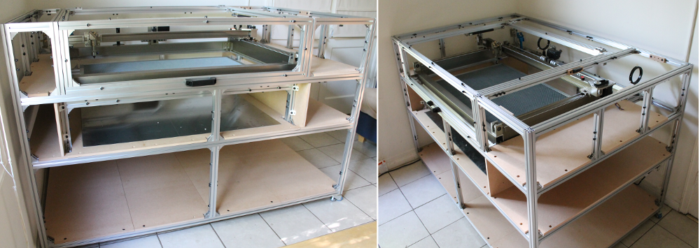

Documentation site for our build of a medium sized laser cutter with a 900 mm x 600 mm cutting bed size and 80 W Reci Laser. This is currently in progress as of Nov. 2014. We will be adding images and information here as we go through the laser cutter build.

Table of Contents¶
Parts list¶
This is a list of all of the parts used in this design, including vendors, part numbers and prices.
Custom parts¶
These are parts which we designed and made in-house, such as the floors and materials to cover the aluminum frame of the laser cutter.
Building the laser cutter¶
Images and notes from the build.